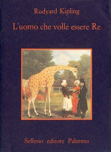

6:34 · 1 OPERA
Il palazzo del sovrano.
Il filo del discorso
Davanti al palazzo reale spagnolo e alla cattedrale vicina, l’autore domanda che cosa giustifichi edifici e apparati destinati al prestigio di un sovrano. Contrappone la gerarchia monarchica al principio di uguaglianza richiamato attraverso Jefferson e la scelta repubblicana americana. Il confronto con altre sedi del potere introduce una riflessione sulla tracotanza del tiranno e sul desiderio di farsi re, con un riferimento cinematografico e librario. La conclusione teme che l’abbandono dell’uguaglianza riapra spazio alla pretesa di superiorità personale.
I libri nel discorso

L’uomo che volle farsi re
Identificazione probabile
Copertina: Sellerio, La memoria 136, 1986
Edizione autonoma del racconto, pubblicato con il titolo italiano L'uomo che volle essere Re e tradotto da Federico Siniscalco. Non è l'edizione identificata nel video.
Il narratore ricorda il film con Sean Connery e precisa che è tratto, crede, da un libro, parafrasandone il titolo come l’uomo che vuole farsi re.
Passaggio 4:41 ↗ · Fonti e libro ↗